Financial economists have spent two decades showing that the words firms and journalists write are related to stock returns. Tetlock (2007) finds that negative media language predicts market prices, Loughran and McDonald (2011) show that finance needs its own word lists, and Cohen et al. (2020) find that firms that change the language of their annual reports earn lower returns in the following months. Language models have raised expectations further. Huang et al. (2023) show that a BERT model trained on finance text labels sentiment better than earlier tools, and Lopez-Lira and Tang (2026) report that ChatGPT scores of news headlines predict next-day returns.
Two practical questions remain open for regulatory filings. First, can an investor who reads a filing as soon as it is public still capture a return, given that the price may already have moved by the first available trade? Second, does the text add anything once the forecaster already knows the event type, the time of day, recent prices, and the accounting numbers? Answering them needs care with timing, because several recent papers show that pretrained models can carry knowledge of the future into a backtest (Glasserman and Lin, 2023; Sarkar and Vafa, 2024; He et al., 2026).
This paper runs that test. I assemble 64,213 filings from EDGAR for 150 firms drawn from the S&P 500, merge them into 60,261 events from January 2000 to July 2026, and give each event four timestamps: SEC acceptance, assumed public availability, the decision time, and the next market open. The target is the abnormal open-to-close return in the first session an investor could trade after the decision time. Feature sources are compared alone and together, the comparisons use identical events, and a 2023-2026 test period was scored once, after the final model and its settings had been hashed.
I report three results.
First, filing text does not reliably improve the forecast. The pre-specified test adds frozen embeddings, from a general encoder (BGE) or a chronologically consistent one (ChronoBERT), to a model that already holds price, event metadata, accounting data, dictionary counts, language-change measures, and TF-IDF factors. Macro-F1 changes by +0.001 [−0.005, +0.008] on the 2008-2019 validation folds, +0.007 [−0.001, +0.016] on the 2020-2022 development period, and −0.001 [−0.012, +0.009] on the locked test. The gate I set in advance for fine-tuning the encoders, a lift of 0.01 with an interval excluding zero, failed, so no encoder was fine-tuned. Because that baseline contains classical text, I also fit a numbers-only model after the lock. With LightGBM on both sides, all text together changes macro-F1 by +0.003 [−0.004, +0.009], +0.002 [−0.008, +0.012], and −0.005 [−0.014, +0.005]. With an elastic net, classical text shows a small gain of about 0.01 in the last two periods, which does not survive the change of classifier. An apparent gain on pre-market filings also comes from the choice of classifier, since it appears without any text.
Second, what skill exists concerns the size of the move. The best model without embeddings scores a locked-test macro-F1 of 0.384, against about 0.33 for a shuffled version of its own predictions. Its AUC for telling movers from non-movers is 0.635 [0.621, 0.649], and among stocks that moved its AUC for direction is 0.494 [0.477, 0.510]. The top decile of predicted movers has a mean absolute abnormal return of 2.87%, about twice the 1.37% in the bottom decile. A long-short backtest built on the frozen model loses money on the locked test at realistic costs.
Third, I document a methodological trap, and I fell into it myself. The study's pre-specified test of post-earnings announcement drift rejected the null with the wrong sign: high-surprise reports underperformed low-surprise reports by 2.66% over days +2 to +60, with a t-statistic of −5.6. The result held in every subperiod, among index members and non-members, and with a one-session delay. It is an artifact. The abnormal returns subtract a pre-event alpha, estimated over days −250 to −30, for each of the 59 days in the window. Good earnings tend to follow good years, so that subtraction is 2.78% larger for the top quintile than for the bottom one, which accounts for the entire spread. Without the alpha term the spread is +0.12% [−0.80%, +0.88%], and a calendar-time portfolio, which estimates no pre-event parameters, gives a Carhart alpha of +0.25% per 59 days (t = 0.46).
The paper contributes in three ways. It adds a tradable-target test to the literature on filing text, which mostly studies returns measured from before or at the filing date. It adds evidence on the size of look-ahead bias in embeddings for a new text source, comparing yearly ChronoBERT vintages with a static encoder on identical events and finding no detectable difference, consistent with what He et al. (2026) find for news. And it shows, with a worked example, how an ordinary event-study specification can produce a highly significant long-horizon result that passes standard robustness checks. That example supports the warnings of Kothari and Warner (1997) and Fama (1998) about long-horizon inference, and it suggests that robustness checks sharing the same bias offer little protection against it.
The sample limits what can be claimed. It contains only firms that survived to 2026, it covers 150 large firms, it uses free price data and a time-series measure of earnings surprise, and two of the four planned encoders were dropped to save compute. Section VIII sets these limits out. The structure of the paper follows the order of the argument: Section II reviews related work and states the hypotheses, Section III describes the data, Section IV the design, Section V the forecast results, Section VI the tests of text, Section VII the drift analysis, Section VIII the economic test and limits, and Section IX concludes.
Loughran and McDonald (2016) and Bochkay et al. (2023) survey the use of text in accounting and finance. Early work counted words: Tetlock et al. (2008) show that negative words in firm-specific news predict earnings and returns, and Loughran and McDonald (2011) show that general-purpose dictionaries misclassify finance terms. Other papers study the information in filings directly. Li (2010) finds that the tone of forward-looking statements in MD&A predicts future earnings, You and Zhang (2009) find larger underreaction to more complex 10-Ks, Lerman and Livnat (2010) find that 8-K items carry significant information after the 2004 rule change, Dyer et al. (2017) document how 10-K text has grown and changed, and Cohen et al. (2020) show that year-to-year changes in filings predict returns. Frankel et al. (2022) compare machine-learning and dictionary sentiment measures of disclosure. Two recent papers illustrate the current direction: Magner et al. (2025) relate the tone of 10-K risk factors to weekly index returns, and Fengler and Phan (2025) use word embeddings to find MD&A topics and relate topic sentiment to returns at several horizons.
A newer group of papers applies neural text models. Ke et al. (2019) build a supervised sentiment measure from news and find strong return predictability. Lopez-Lira and Tang (2026) use ChatGPT on headlines. Kim et al. (2024) ask a language model to analyze anonymized financial statements. Gu et al. (2020) and Jiang et al. (2023) show that machine learning can extract return signals from characteristics and price charts. My design differs from these papers in two respects. The target excludes any move that occurs before an investor could act, and the benchmark is a rich set of features measured on the same events, so the question is about the increment from text.
A pretrained model may have read text from after the event it is asked to evaluate. Glasserman and Lin (2023) and Sarkar and Vafa (2024) develop tests for this bias. He et al. (2026) respond by training ChronoBERT and ChronoGPT on text available at each date and report that look-ahead bias is modest in news-based return forecasts. I use their yearly vintages, so that an event in year Y is encoded by the model trained through year Y−1, and I compare them with a static encoder on identical events.
Ball and Brown (1968) and Bernard and Thomas (1989, 1990) established that prices keep moving in the direction of an earnings surprise. Later work asks when and why: Livnat and Mendenhall (2006) find stronger drift with analyst-based surprises than with time-series surprises, and Hirshleifer et al. (2009) and DellaVigna and Pollet (2009) link it to limited attention. Karolyi et al. (2025) attribute part of it to how investors process large numbers, Fink et al. (2024) reproduce it in laboratory markets, Zhang et al. (2024) study its asymmetry and its relation to order flow, and Lan et al. (2024) propose an overnight-return measure of surprise in Chinese stocks. Several papers find that anomalies weaken after publication or as liquidity improves (McLean and Pontiff, 2016; Chordia et al., 2014), and Martineau (2022) finds that this one has gone in large US stocks. Hou et al. (2020) show that many anomalies fail to replicate, and Harvey et al. (2016) argue for higher hurdles. On measurement, Kothari and Warner (1997) and Fama (1998) warn that long-horizon abnormal returns are sensitive to the benchmark model, which turns out to be decisive here.
I wrote down the following hypotheses, with the primary metric and pass-or-fail rules, in a configuration file that was hashed before any development-period scoring. Table XVIII gives the outcome of each. H1: filing text adds out-of-sample value beyond price, metadata, and accounting data. H2: changes in filing language add more than levels. H3: validated structured extraction adds value beyond embeddings. H4: point-in-time encoders differ from static ones. H5: a stacked ensemble beats the best single model. H6: richer retrieval designs beat a hybrid baseline. H8: gains shrink under strict timing, costs, and the locked test. (H7, on analogue-retrieval and time-series extensions, was not run.) Separately, I specified a test of earnings drift within an event study.
| Source | Use | Coverage in this study | Access |
|---|---|---|---|
| SEC EDGAR | 10-K, 10-K405, 10-Q, 8-K text and exhibits; SGML acceptance times | 64,213 filings | Public |
| EDGAR XBRL | Balance-sheet and income data as first reported | 304,348 facts | Public |
| Press-release exhibits (EX-99) | EPS figures parsed from earnings releases | 14,981 results releases | Parsed from EDGAR |
| Daily prices | Returns, volatility, benchmark | 1,024,405 daily bars | Local OHLCV files, Yahoo Finance |
| Kenneth French data library | Market, size, value, momentum factors | Daily | Public |
| fja05680/sp500 (GitHub) | S&P 500 membership history | Pinned commit | Public |
| Loughran-McDonald dictionary | Word-tone counts | 1993-2025 edition | Free for academic use |
| JanosAudran/financial-reports-sec | Firm overlap and parser checks only, never as text | 10-Ks through 2020 | Hugging Face, pinned |
Of 979 candidate firms with price data, 743 also appear in the Hugging Face 10-K corpus. From the members of the S&P 500 among them, I draw 150 with a fixed seed, stratified across the 12 Fama-French industries. An earlier plan used 500 firms (353 S&P members and 147 others). I cut it to these 150 to finish a complete run, and all 150 are in the larger universe. 70.6% of events occur while the firm is in the index.
I download all 10-K, 10-K405, 10-Q, and 8-K filings for these firms. Same-day 8-Ks from one firm merge into a single event, giving 60,261 events: 45,193 8-Ks, 11,271 10-Qs, and 3,797 10-Ks. Of the filings, 63,933 yield at least one target section. I keep Items 1, 1A, 7, and 7A of the 10-K; the MD&A, market-risk, and risk-factor sections of the 10-Q; and the item text and press-release exhibit of the 8-K, for 121,398 sections in total. I replace firm names and tickers with placeholders (881,908 name and 249,224 ticker replacements), so that a model cannot learn firm identity from text. Sections are split into 350-word chunks overlapping by 50 words, about 900,694 chunks.
Figure 1 shows the sample through time and when filings reach EDGAR. More than half arrive after the close, which is why the target is measured from the next open. Table II reports the target by form and session. The mean abnormal return is close to zero in every group, and its standard deviation is about 2.6%.
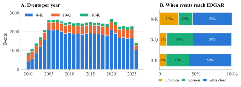
| N | Mean | SD | P5 | P95 | Mean |AR| | Down % | Side % | Up % | |
|---|---|---|---|---|---|---|---|---|---|
| By form | |||||||||
| All events | 59,698 | 0.03 | 2.56 | −3.52 | 3.77 | 1.60 | 29.4 | 40.5 | 30.0 |
| 8-K | 44,809 | 0.04 | 2.62 | −3.62 | 3.86 | 1.64 | 29.7 | 39.8 | 30.5 |
| 10-Q | 11,133 | 0.02 | 2.40 | −3.38 | 3.58 | 1.54 | 29.4 | 41.5 | 29.1 |
| 10-K | 3,756 | 0.03 | 2.17 | −2.94 | 3.07 | 1.35 | 26.3 | 46.2 | 27.5 |
| By session of acceptance | |||||||||
| Before the open | 12,870 | 0.04 | 2.95 | −4.22 | 4.54 | 1.92 | 33.5 | 32.6 | 33.9 |
| During the session | 14,221 | 0.00 | 1.83 | −2.69 | 2.71 | 1.20 | 27.6 | 44.9 | 27.5 |
| After the close | 32,344 | 0.05 | 2.66 | −3.63 | 3.94 | 1.65 | 28.7 | 41.6 | 29.7 |
Survivorship. Every firm in the sample was listed in 2026. Firms that were delisted, acquired, or failed are missing, and the eligible data cover about 353 of the 1,094 tickers that were index members during the period. Prices come from free sources, which lack delisting returns. This limit affects the long-horizon results most, and Section VII quantifies its potential effect on the drift result.
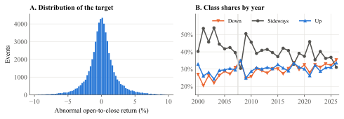
Each event carries four timestamps (Figure 3). Acceptance comes from the SGML header for 96% of events; the rest are date-only or uncertain and are flagged. The JSON feed from EDGAR turned out to mix two time conventions, with a 30% mismatch against the headers on the sample checked, so I use the headers. I assume a filing is public five minutes after acceptance and that an investor can decide thirty minutes after that. Those two lags are assumptions, so the results are a point-in-time evaluation under an assumed availability and processing-latency policy. I do not report sensitivity to them. Same-day 8-K groups are clocked at their last acceptance. Every feature records the time of its latest input, and an assertion checks each row against the decision time; it found 0 violations in the final run.
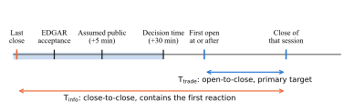
For event i of stock s, the primary target is the abnormal return over the first tradable session,
where the stock and the benchmark are measured over the identical interval, and β̂ comes from a market model estimated on sessions −250 to −30 with at least 120 observations. No alpha is subtracted from this one-session return. The class label is Up if AR exceeds kσ̂s, Down if it is below −kσ̂s, and Sideways otherwise, with k = 0.5 and σ̂ the stock's estimation-window volatility. This scaling makes utilities and technology stocks comparable. A complementary target, Tinfo, runs close to close from before acceptance and includes the first reaction; it excludes events accepted during the session.
| Family | Features | Examples | Availability rule |
|---|---|---|---|
| Metadata | 68 | Form, 8-K item categories, sections present, industry, calendar, session | Own filing metadata at decision time |
| Price and market | 19 | Returns over 1 to 250 days, volatility, volume, beta, market state | Closes at or before decision time |
| Word counts | 18 | Loughran-McDonald tone categories, length, boilerplate | Own filing text |
| Language change | 11 | Cosine and Jaccard change from the firm's prior filing | Prior documents public before decision time |
| Accounting | 10 | Assets, leverage, ROA, revenue, book-to-market, earnings surprise | Filed before decision time; never a later filing of the same cluster |
| Reaction and novelty | 2 | Last earnings reaction, share of new text | Reaction window closed before decision time |
Rungs are compared on identical events. L0 is the class prior. L1 (price), L2 (metadata), L3 (accounting), L4 (classical text: word counts, language change, novelty, and up to 64 TF-IDF factors fitted in each training fold), and L5 (embeddings) each use one source on its own. L6 combines price, metadata, accounting, and classical text, and L7 adds the embedding vectors to L6. L6 without the change features is the control for H2. Note what this design tests: L7 minus L6 measures the increment from language-model embeddings over a baseline that already contains classical text. It does not measure the value of text as such, and the pipeline had no rung free of text. Section VI.C adds one. Metadata includes 8-K item categories, which are themselves a coded summary of what the filing reports.
Earnings surprise. I have no analyst forecasts. The surprise of report q is a seasonal random walk scaled by its own history,
using first-reported values only. Current EPS comes from the press-release exhibit, parsed with a set of rules whose agreement with XBRL I checked on a replay sample (about 84%), and history comes from filings public before the decision time. 14,407 events are verified earnings releases, and 9,535 have a surprise score.
I compare two frozen encoders. ChronoBERT (He et al., 2026) comes as 26 yearly vintages, each trained on text through its date, and has about 150 million parameters. BGE-base (Xiao et al., 2024) is a general encoder of about 110 million parameters with no stated training cutoff, so results using it carry a retrospective label. Each chunk becomes 768 numbers. I take the mean and maximum over a section's chunks and combine sections into a 1,536-dimensional event vector, then reduce it with PCA fitted inside each training fold. I planned two more encoders, SEC-BERT and FinBERT-tone, and dropped them to save GPU time. I have no evidence on how they would have performed.
The classifiers are LightGBM (Ke et al., 2017), CatBoost (Prokhorenkova et al., 2018), and an elastic-net logistic regression (Zou and Hastie, 2005). The elastic net's objective is convex, and repeated random starts reach the same value to within 1.7e-09. Hyperparameters come from Optuna (Akiba et al., 2019) on the three latest folds, with budgets of 15, 6, and 8 trials in the structured stage and 8 and 4 in the embedding stage. These budgets are small: across 32 rung-and-classifier combinations, the median change in validation score from tuning is zero, and only 44% improve. No model should be regarded as fully tuned. Class weights balance the classes and down-weight overlapping events. Predicted probabilities are corrected to true frequencies, and the predicted class maximizes the probability relative to the class prior.
Figure 4 shows the splits. Training expands from 2000 with at least eight years of data, followed by six two-year validation blocks from 2008 to 2019. The 2020-2022 development period chooses the final model, and the period from January 2023 through July 2026 is the locked test. Events whose outcome window reaches the next block are purged and a 90-day embargo separates blocks, following López de Prado (2018). Fold-level preprocessing is fitted on training rows only.
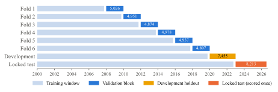
The rule for the final model was the highest mean walk-forward macro-F1. It chose L7 with LightGBM and BGE. The architecture was hashed and the locked test was scored once, on 25 October 2026, with a software guard against reuse. That guard held, but the procedure fell short in two respects described in Appendix A: the choice compared scores from two different runs, and the lock was opened minutes after the freeze, without the review of development results that I had planned.
The primary metric is macro-F1, the unweighted mean of the F1 scores of the three classes. Intervals come from a month-block bootstrap with 2,000 replications, since events in the same month share market shocks. Paired comparisons resample the same months for both models. Scores in this paper are pooled over all events in a period; the pipeline's gate used the mean across folds, which gives a lift of −0.001 [−0.007, +0.005].
The relevant benchmark needs care. A classifier that always picks the largest class scores 0.19, and a within-month label permutation of the full pipeline averages 0.25, but both understate chance for a model with balanced predictions. Shuffling a model's own predictions against the labels keeps its class mix and removes its information, and it gives about 0.33. I read every score against that line.
To separate magnitude from direction I define two AUCs: the move AUC scores one minus P(Sideways) against whether the stock left the Sideways band, and the direction AUC scores P(Up) minus P(Down) against Up, among events that moved. Drift tests use two-way clustered standard errors by firm and date (Petersen, 2009; Cameron et al., 2011) and Benjamini-Hochberg control within test families (Benjamini and Hochberg, 1995). Calendar-time tests use Newey-West errors (Newey and West, 1987).
| Rung | LightGBM | CatBoost | Elastic net |
|---|---|---|---|
| L1 Price | 0.362 | 0.337 | 0.360 |
| L2 Metadata | 0.379 | 0.367 | 0.358 |
| L3 Accounting | 0.347 | 0.348 | 0.345 |
| L4 Classical text | 0.374 | 0.372 | 0.364 |
| L5 Embeddings | 0.367 | – | 0.357 |
| L6 All non-neural | 0.390 | 0.385 | 0.392 |
| L7 L6 + embeddings | 0.393 | – | 0.346 |
Table IV and Figure 5 give the walk-forward results. Metadata is the strongest single source and accounting data the weakest. Embeddings alone do better than chance, close to classical text and a little below it, so they contain real signal. Yet that signal is already available from other features. L7 ties L6 under LightGBM. Under the elastic net it falls from 0.392 to 0.346, which I attribute to many correlated columns swamping a regularized linear model.
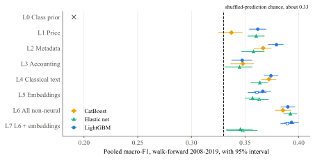
| Model | Accuracy | Macro-F1 | Chance | Log-loss | ECE | Move AUC | Dir. AUC |
|---|---|---|---|---|---|---|---|
| Walk-forward 2008-2019 (N = 28,533) | |||||||
| Price only (L1) | 0.366 | 0.360 [0.352, 0.368] | 0.328 | 1.083 | 0.018 | 0.568 | 0.511 |
| All non-neural (L6) | 0.416 | 0.392 [0.385, 0.398] | 0.329 | 1.070 | 0.005 | 0.629 | 0.512 |
| L6 + embeddings (L7) | 0.413 | 0.393 [0.386, 0.400] | 0.331 | 1.067 | 0.008 | 0.625 | 0.516 |
| Development 2020-2022 (N = 7,453) | |||||||
| Price only (L1) | 0.359 | 0.305 [0.286, 0.321] | 0.264 | 1.078 | 0.024 | 0.600 | 0.514 |
| All non-neural (L6) | 0.428 | 0.396 [0.383, 0.407] | 0.326 | 1.060 | 0.011 | 0.651 | 0.495 |
| L6 + embeddings (L7) | 0.428 | 0.404 [0.389, 0.415] | 0.329 | 1.060 | 0.011 | 0.647 | 0.506 |
| Locked test 2023-2026 (N = 8,199) | |||||||
| Price only (L1) | 0.361 | 0.351 [0.339, 0.362] | 0.330 | 1.097 | 0.040 | 0.538 | 0.500 |
| All non-neural (L6) | 0.401 | 0.384 [0.375, 0.394] | 0.328 | 1.071 | 0.009 | 0.635 | 0.494 |
| L6 + embeddings (L7) | 0.403 | 0.383 [0.370, 0.394] | 0.327 | 1.071 | 0.028 | 0.637 | 0.494 |
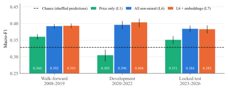
Table V and Figure 6 report the main results. L6 scores 0.392, 0.396, and 0.384 in the three periods, so skill holds up over time, including on data that played no part in model selection. Its lead over the price-only model is +0.032 [+0.023, +0.042], +0.091 [+0.068, +0.114], and +0.033 [+0.022, +0.045]. The magnitude is modest. Locked-test log-loss is 1.071 against 1.096 for the class prior, and accuracy is 0.401 against 0.366 for always predicting Sideways. On the locked test L6 is well calibrated, as Figure 10 shows.
Figure 7 shows the central pattern. The move AUC of L6 is well above 0.5 in every period. The direction AUC is 0.512 [0.503, 0.522] on the validation folds, barely above a coin flip, and it falls to 0.495 and 0.494 afterwards, with intervals covering 0.5. The two locked-test values of L6 and L7 happen to match to six decimals, but the models differ: their directional signals correlate only 0.56 and they predict the same class for 72% of events. Restricting to verified earnings releases, where news should be densest, does not help: L6's direction AUC is 0.521, 0.471, and 0.483.
Figure 8 expresses the magnitude result in returns. Sorting locked-test events on L6's predicted probability of a move, mean absolute abnormal return rises from 1.37% in the lowest decile to 2.87% in the highest, and the share of events leaving the Sideways band rises from 47% to 82%. The price-only model shows much less of this, which points to metadata (an earnings release after the close is likely to produce a large move at the next open, whatever it says). The confusion matrix in Figure 9 shows the same thing from another angle: the model finds Sideways events best and often confuses Up with Down.
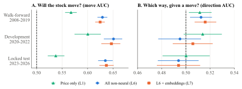
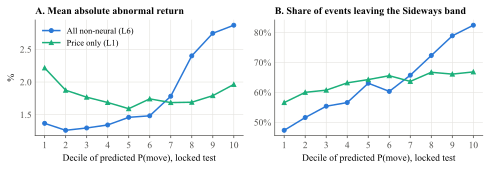
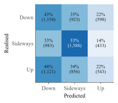
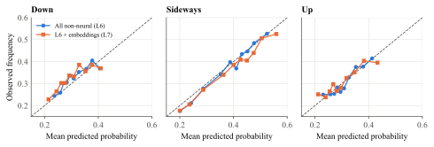
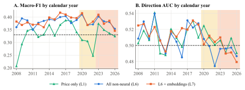
Figure 11 shows these metrics year by year. L6 and L7 stay above chance in most years. The price-only model is much less stable and falls well below chance in 2020-2022, when market volatility shifted sharply, which explains the unusually large gain of L6 over L1 in the development period.
| Metric | Walk-forward 2008-2019 | Development 2020-2022 | Locked test 2023-2026 |
|---|---|---|---|
| Panel A. Embeddings over all non-neural features (L7 − L6) | |||
| Macro-F1 | +0.001 [−0.005, +0.008] | +0.007 [−0.001, +0.016] | −0.001 [−0.012, +0.009] |
| Log-loss | −0.003 [−0.012, +0.003] | +0.000 [−0.003, +0.004] | +0.001 [−0.002, +0.004] |
| Multiclass AUC | −0.004 [−0.007, −0.001] | −0.002 [−0.008, +0.003] | −0.000 [−0.004, +0.004] |
| Move AUC | −0.004 [−0.009, −0.000] | −0.004 [−0.010, +0.001] | +0.002 [−0.003, +0.007] |
| Direction AUC | +0.003 [−0.006, +0.013] | +0.011 [−0.006, +0.029] | −0.000 [−0.016, +0.015] |
| Panel B. Change features (L6 − L6 without change features) | |||
| Macro-F1 | −0.001 [−0.003, +0.002] | +0.002 [−0.003, +0.006] | −0.002 [−0.006, +0.003] |
| Panel C. All non-neural features over price (L6 − L1) | |||
| Macro-F1 | +0.032 [+0.023, +0.042] | +0.091 [+0.068, +0.114] | +0.033 [+0.022, +0.045] |
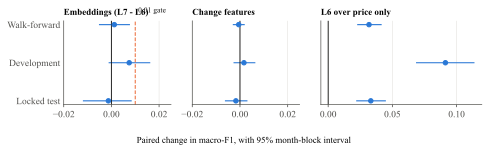
Table VI and Figure 12 give the answer to H1. All three macro-F1 intervals cover zero, and the point estimates do not share a sign. The gate failed, so no encoder was fine-tuned, and the study's language side stays at frozen embeddings. Other metrics agree: on the locked test, the changes in log-loss, multiclass AUC, move AUC, and direction AUC are all within about 0.002 of zero, with intervals covering it. The intervals are tight enough to carry information. Lifts of 0.01 or more occur in 0.3% of bootstrap draws on the validation folds and 1.4% on the locked test, so a gain of the size the gate required is unlikely in those periods, although the development period, at 28%, does not rule it out. The change features add nothing either (H2).
| Comparison (macro-F1) | Difference | p-value |
|---|---|---|
| LightGBM + BGE vs LightGBM | −0.001 [−0.007, +0.005] | 0.781 |
| LightGBM + ChronoBERT vs LightGBM | −0.005 [−0.011, +0.001] | 0.101 |
| Elastic net + BGE vs elastic net | −0.047 [−0.058, −0.036] | 0.000 |
| Elastic net + ChronoBERT vs elastic net | −0.045 [−0.058, −0.033] | 0.000 |
| ChronoBERT vs BGE (LightGBM, L7) | −0.004 [−0.009, +0.001] | 0.153 |
The main comparison has a flaw, because L6 is an elastic net and L7 is LightGBM. Table VII holds the classifier fixed. With LightGBM the change is −0.001 [−0.007, +0.005] for BGE and −0.005 [−0.011, +0.001] for ChronoBERT. The vintage encoder and the static encoder do not differ detectably, −0.004 [−0.009, +0.001], which is the answer to H4, and it matches the modest look-ahead bias found by He et al. (2026) for news. Since this is a retrospective comparison on a 2008-2019 sample, it does not establish that the static encoder is clean, only that any bias it carries does not produce a detectable gain here. A stacked ensemble does not beat L7 in the development period (H5: −0.003, with an interval covering zero).
| Walk-forward 2008-2019 | Development 2020-2022 | Locked test 2023-2026 | |
|---|---|---|---|
| Levels of macro-F1 | |||
| Numbers only, elastic net | 0.390 | 0.387 | 0.375 |
| Numbers only, LightGBM | 0.391 | 0.402 | 0.388 |
| Changes in macro-F1 | |||
| All text, both LightGBM (L7 − numbers) | +0.003 [−0.004, +0.009] | +0.002 [−0.008, +0.012] | −0.005 [−0.014, +0.005] |
| Classical text, both elastic net (L6 − numbers) | +0.002 [−0.003, +0.006] | +0.010 [+0.002, +0.017] | +0.009 [−0.000, +0.019] |
| TF-IDF factors, elastic net (L6 − numbers + word features) | +0.001 [−0.003, +0.005] | +0.007 [−0.001, +0.016] | +0.004 [−0.003, +0.011] |
| Metadata and accounting, elastic net (numbers − L1) | +0.030 [+0.021, +0.039] | +0.082 [+0.059, +0.104] | +0.024 [+0.010, +0.038] |
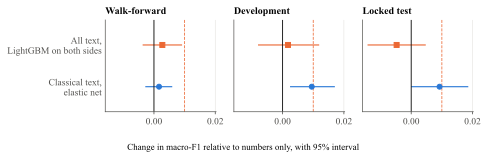
Since L6 holds classical text, the comparison above cannot say whether text helps at all. To ask that directly I fit a rung that the pipeline did not have, with price, metadata, and accounting features only, using L6's settings without further tuning. Table VIII and Figure 13 show the results. Numbers alone score 0.388 on the locked period with LightGBM, against 0.384 for L6 and 0.383 for L7. With LightGBM on both sides, all text together changes macro-F1 by +0.003 [−0.004, +0.009], +0.002 [−0.008, +0.012], and −0.005 [−0.014, +0.005], all covering zero. The elastic net gives a somewhat different picture: classical text adds +0.002 [−0.003, +0.006], +0.010 [+0.002, +0.017], and +0.009 [−0.000, +0.019], a gain of about the size of the gate in the two later periods, though the locked-period interval just reaches zero. I read this as weak evidence of a small gain that depends on the classifier. A linear model may benefit from text features that a tree model can replace with interactions among the numbers. Direction does not improve either: L7 minus numbers on direction AUC is −0.020 [−0.033, −0.007] on the locked period, and the numbers-only LightGBM's own direction AUC there is 0.513, the highest of any locked-period model and still small. Because I fit this rung after seeing the locked results, its locked-period column is descriptive and has none of the protection of the original test.
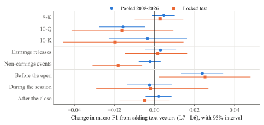
Figure 14 breaks the lift down by form, earnings status, and session. These cuts are exploratory, and I chose them after the locked test had been scored. One stands out: filings accepted before the open show a lift of +0.024 [+0.013, +0.034] pooled and +0.025 [+0.002, +0.048] on the locked test. Taken at face value, that would suggest text helps exactly when an investor has the whole trading day ahead. 10-Qs and the locked-test non-earnings events go the other way, at −0.016 [−0.027, −0.005] and −0.018 [−0.031, −0.006].
| Comparison | Before the open | During the session | After the close |
|---|---|---|---|
| LightGBM with BGE vs. elastic net (L7 vs. L6) | +0.024 [+0.010, +0.039] | −0.000 [−0.013, +0.013] | +0.005 [−0.004, +0.014] |
| LightGBM vs. elastic net, no text | +0.020 [+0.007, +0.034] | +0.003 [−0.010, +0.016] | +0.007 [−0.003, +0.016] |
| LightGBM with BGE vs. LightGBM (text only) | +0.004 [−0.007, +0.015] | −0.003 [−0.015, +0.009] | −0.002 [−0.011, +0.006] |
| LightGBM with ChronoBERT vs. LightGBM (text only) | −0.003 [−0.014, +0.008] | −0.000 [−0.012, +0.011] | −0.007 [−0.016, +0.002] |
Table IX shows that this lead is false. The L7-versus-L6 comparison changes two things at once. Without any text, moving from the elastic net to LightGBM already raises pre-market macro-F1 by +0.020 [+0.007, +0.034]. With LightGBM on both sides, adding text changes it by +0.004 [−0.007, +0.015]. The pre-market gain belongs to the tree model's ability to use structured features in that session. The locked test scored only the frozen pair, so I cannot repeat this decomposition there.
One explanation for the null is that the news is priced before the first open, leaving nothing for a tradable target. Tinfo, which includes that first reaction, lets me check this, though only for the elastic-net models of L1, L4, and L6. Table X and Figure 15 compare the two targets on the same 21,660 events. Move AUC rises under Tinfo, from 0.641 to 0.667 for L6, as one would expect of a window that contains the reaction. Direction AUC barely changes, at 0.514 and 0.515. So even with the first reaction included, these features say little about direction, and pricing before the open is at most part of the story. Dictionary tone correlates weakly with the reaction: across earnings releases, the Spearman correlation of net tone with CAR[−1,+1] is 0.048, and SUE's is 0.088. I did not run embeddings on this target, so the test covers classical text, and the embedding question stays open for Tinfo.
| Rung | Target | Macro-F1 | Move AUC | Direction AUC |
|---|---|---|---|---|
| L1 Price | Tinfo | 0.334 | 0.558 [0.545, 0.570] | 0.504 [0.493, 0.516] |
| L1 Price | Ttrade | 0.363 | 0.570 [0.558, 0.581] | 0.512 [0.501, 0.522] |
| L4 Classical text | Tinfo | 0.398 | 0.651 [0.640, 0.660] | 0.510 [0.500, 0.521] |
| L4 Classical text | Ttrade | 0.370 | 0.607 [0.598, 0.616] | 0.507 [0.497, 0.518] |
| L6 All non-neural | Tinfo | 0.399 | 0.667 [0.656, 0.678] | 0.515 [0.506, 0.523] |
| L6 All non-neural | Ttrade | 0.398 | 0.641 [0.630, 0.651] | 0.514 [0.505, 0.523] |
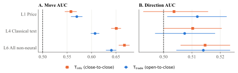
| Form | N | CAR[−1,+1] | CAR[0,+1] | [+2,+60], alpha subtracted | [+2,+60], no alpha | [+2,+60], minus S&P 500 |
|---|---|---|---|---|---|---|
| 8-K | 44,798 | +0.09 (3.18) | +0.07 (2.73) | −0.11 (−1.09) | +1.31 (11.05) | +1.48 (9.79) |
| 10-Q | 11,126 | +0.01 (0.10) | −0.06 (−1.33) | −0.32 (−2.57) | +1.36 (8.24) | +1.49 (8.39) |
| 10-K | 3,756 | +0.09 (1.13) | +0.10 (1.52) | +0.60 (2.02) | +2.08 (6.64) | +2.22 (6.79) |
Table XI reports event-study returns. Over short windows the choice of expected-return model hardly matters, and reactions are small on average. Over the longer window it matters a great deal: the mean for 8-Ks is −0.11% with pre-event alpha subtracted and +1.31% without it. Figure 16 draws the two versions. The upward slope in Panel B is what a survivor sample should show, and the flat line in Panel A comes from removing each firm's own past outperformance. The two give upper and lower reference points, and neither is a clean estimate of drift in levels. Only the spreads in the next subsections are informative.
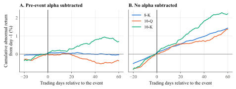
I sort earnings releases into quintiles of SUE using breakpoints from the prior four quarters, so the sort uses no future data, and compare the top and bottom quintiles over days +2 to +60. The pre-specified measure is the cumulative Carhart (Carhart, 1997) abnormal return, with alpha and factor loadings estimated on days −250 to −30:
The test gave −2.63% [−3.50%, −1.70%] on 3,825 reports in the two quintiles, a reversal rather than the classic continuation. The sign of the surprise itself is right: the three-day reaction rises from −0.61% in the lowest quintile to +0.87% in the highest (Figure 17, Panel A). The reversal then passed every check I applied, shown in Appendix B: three subperiods, a one-session delay, index members and non-members, size and volatility splits, winsorizing, excluding crisis years, and quarter-by-quarter spreads (mean −2.69%, t = −5.47, negative in 79% of 91 quarters). An earlier audit in the project had accepted it as a feature of the sample and blamed survivorship. Earlier write-ups of this study, including the project report and dashboard, described it as a puzzling finding before the problem below was found.
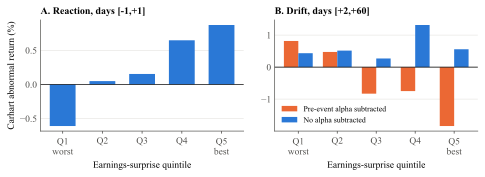
A Fama-MacBeth regression (Fama and MacBeth, 1973) gave the first clue. With the pre-specified measure as the dependent variable, the coefficient on the within-quarter SUE rank is −0.034 (t = −5.96). Adding controls takes it to 0.001 (t = 0.15), and the coefficient on past 12-month return is −0.061 per standard deviation (t = −9.5). A t-statistic of that size for a momentum variable, inside a measure already adjusted for momentum, suggests an effect built into the left-hand side.
It is. Equation (3) subtracts α̂ for each of 59 days, and α̂ is the stock's average abnormal return over roughly the prior year. The Spearman correlation between this alpha term and past return is 0.71, and past return correlates 0.23 with SUE. High-surprise firms have had good years: mean past return rises from 4.8% in the bottom quintile to 26.8% in the top one. So the amount subtracted rises from −0.38% to +2.40% (Figure 18). The difference, 2.78%, is the whole spread: it is the gap between the estimate with alpha, −2.66%, and the estimate without it, +0.12%. Because past alpha is largely noise and a sample artifact rather than a persistent expected return, projecting it forward manufactures a negative relation with anything that correlates with past performance. Every check in Appendix B shares this term, which is why all of them agreed.
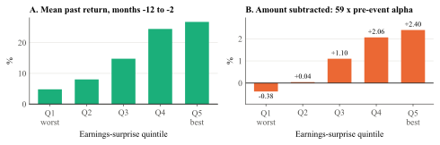
| Quintile | Reports | Mean SUE | Reaction [−1,+1] | Carhart with alpha | Alpha term | Carhart, no alpha | Stock minus S&P 500 |
|---|---|---|---|---|---|---|---|
| Q1 (worst) | 1,945 | −2.53 | −0.61 | +0.82 | −0.38 | +0.43 | +0.56 |
| Q2 | 1,882 | −0.18 | +0.05 | +0.47 | +0.04 | +0.52 | +0.51 |
| Q3 | 1,852 | 0.17 | +0.15 | −0.83 | +1.10 | +0.27 | +0.34 |
| Q4 | 1,877 | 0.71 | +0.65 | −0.75 | +2.06 | +1.31 | +1.45 |
| Q5 (best) | 1,947 | 3.18 | +0.87 | −1.84 | +2.40 | +0.56 | +0.72 |
| Measure | Q1 | Q5 | Q5 − Q1 | 95% interval | t | N |
|---|---|---|---|---|---|---|
| Market model, pre-event alpha subtracted | +1.44 | −1.88 | −3.32 | [−4.38, −2.27] | −6.40 | 3,857 |
| Carhart, pre-event alpha subtracted | +0.82 | −1.84 | −2.66 | [−3.54, −1.83] | −5.61 | 3,845 |
| Market model, no alpha | +0.43 | +0.66 | +0.24 | [−0.80, +1.20] | 0.58 | 3,857 |
| Carhart, no alpha | +0.43 | +0.56 | +0.12 | [−0.80, +0.88] | 0.30 | 3,845 |
| Carhart, alpha and loadings from days [+61,+280] | +0.04 | −0.09 | −0.13 | [−1.07, +0.86] | −0.29 | 3,728 |
| Market-adjusted (stock minus S&P 500) | +0.56 | +0.72 | +0.16 | [−0.89, +1.18] | 0.40 | 3,857 |
| Raw return | +3.64 | +4.03 | +0.39 | [−0.92, +1.67] | 0.80 | 3,857 |
Table XII and Table XIII measure the spread several ways. Dropping the alpha term gives +0.12% [−0.80%, +0.88%] for the Carhart model and +0.24% [−0.80%, +1.20%] for the market model. Estimating alpha and loadings after the window instead, on days +61 to +280, gives −0.13% [−1.07%, +0.86%]. Simple stock-minus-index returns give +0.16% and raw returns give +0.39%. In the Fama-MacBeth regressions the SUE coefficient without the alpha term is 0.005 (t = 0.88), and with controls it is 0.005 (t = 1.02), while the coefficient on past return collapses to 0.002 (t = 0.86), as Table XIV shows.
| Carhart with alpha (1) | Carhart with alpha (2) | Carhart, no alpha (1) | Carhart, no alpha (2) | Minus S&P 500 (2) | |
|---|---|---|---|---|---|
| SUE rank (0 to 1) | −0.0338 (−5.96) | 0.0008 (0.15) | 0.0050 (0.88) | 0.0053 (1.02) | 0.0088 (1.76) |
| Reaction [−1,+1] | 0.0009 (0.53) | −0.0003 (−0.15) | −0.0002 (−0.13) | ||
| Past return, months −12 to −2 | −0.0605 (−9.47) | 0.0021 (0.86) | 0.0038 (1.03) | ||
| Log market cap | −0.0030 (−1.35) | −0.0054 (−2.82) | −0.0039 (−1.97) | ||
| Book-to-market | 0.0017 (0.39) | 0.0005 (0.12) | −0.0004 (−0.11) | ||
| 60-day volatility | −0.0028 (−0.61) | −0.0033 (−0.87) | 0.0044 (0.95) |
The cleanest evidence comes from calendar-time portfolios, which need no event-level estimation. Each day I hold, equally weighted, all stocks in days +2 to +60 after a report in the top quintile, do the same for the bottom quintile, and regress the daily spread on the Carhart factors. Table XV shows the results. The spread's alpha is +0.25% per 59 days (t = 0.46), with an interval of −0.83% to +1.33%. Its raw mean is +0.30%. It is the momentum loading that stands out, at 0.27 (t = 15.2), confirming that the top-surprise portfolio tilts toward past winners. Figure 19 collects these estimates.
| Sample | Days | Names per side | Raw mean | t | Carhart alpha | t | Momentum loading | t |
|---|---|---|---|---|---|---|---|---|
| All reports | 5,100 | 21 / 21 | +0.30 | 0.45 | +0.25 | 0.46 | 0.27 | 15.2 |
| 2000-2009 | 1,014 | 13 / 15 | +1.03 | 0.46 | +0.99 | 0.60 | 0.30 | 5.9 |
| 2010-2019 | 2,450 | 21 / 21 | +0.33 | 0.46 | −0.07 | −0.11 | 0.26 | 10.0 |
| 2020-2026 | 1,652 | 27 / 25 | −0.28 | −0.25 | −0.09 | −0.10 | 0.22 | 10.0 |
| Member at the event | 4,859 | 16 / 16 | +0.44 | 0.60 | +0.44 | 0.70 | 0.25 | 11.8 |
| Not a member at the event | 1,869 | 7 / 6 | +1.78 | 1.04 | +1.44 | 0.91 | 0.19 | 4.7 |
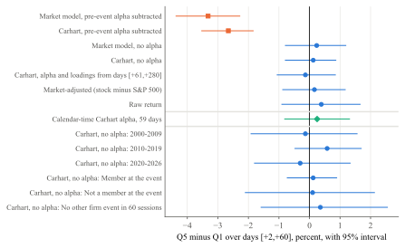
So this sample shows neither a reversal nor detectable continuation in large firms over days +2 to +60, using a time-series surprise. An absence of drift fits the evidence that the anomaly has faded in large liquid stocks (Chordia et al., 2014; Martineau, 2022), although two features of the design bias against finding it. A seasonal random-walk surprise is a weaker signal than an analyst-based one (Livnat and Mendenhall, 2006). And survivorship can hide continuation, since firms that kept falling after bad news are the ones most likely to be missing (Shumway, 1997; Brown et al., 1992). Figure 20 gives a rough sense of scale: if 5% of low-surprise reports were missing and those averaged a 30% loss, a figure taken from the delisting returns reported by Shumway (1997) for performance-related delistings in a much broader sample, the true spread would be about +1.6% rather than +0.1%. These are illustrative inputs, and for large firms the missing share is probably smaller, but the direction of the bias is clear. The interval around my estimate should be read as a statement about survivors.
The broader lesson concerns specification. Subtracting a pre-event alpha is common in short-window event studies, where it does little harm because the window is short. Over 59 days it can dominate. The bias here does not require any error in the code, and it survives subperiods, sample splits, clustered errors, multiple-testing control, and a one-session delay, since all of them share the term. It would appear in any sort on a variable correlated with past performance. Calendar-time portfolios, or alpha-free measures, avoid it. A simple diagnostic is to regress the drift measure on past return: a large negative coefficient, from a measure already adjusted for momentum, is the warning sign.
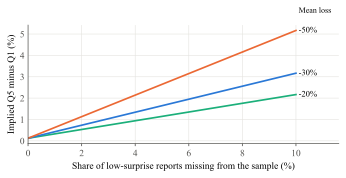
As an economic check, I trade the frozen model, refitted on a five-session target to match the holding period. The signal is P(Up) minus P(Down). Thresholds come from out-of-fold training signals and mark the top and bottom fifths. The strategy enters at the first open after the decision time, holds for five sessions, caps weights at 5%, charges 10 or 20 basis points per side, and assumes 50 basis points a year to borrow. Table XVI and Figure 21 show the results. Under the base setting (no delay, 10 basis points) the long book earns +7.1% a year in the development period, +2.0% against the S&P 500 on the same days, and +1.3% a year on the locked test, −5.6% against the index. The hypothetical long-short portfolio loses 2.0% a year on the locked test. The delayed version looks better in development and also loses on the locked test. The long book holds few names (9 on average) and sits in cash on 68% of locked-test days, so index comparisons use only the days it is invested. Deflated Sharpe probabilities (Bailey and López de Prado, 2014) are all low. Since the model has no directional skill, these outcomes are what one should expect.
| Period | Delay | Cost (bps) | Long | Long − S&P | Long-short | Sharpe, long | Sharpe, L-S | DSR |
|---|---|---|---|---|---|---|---|---|
| Development | 0 | 10 | +7.1% | +2.0% | −2.7% | 0.61 | −0.16 | 0.001 |
| Development | 0 | 20 | +5.2% | +0.1% | −11.1% | 0.45 | −0.67 | 0.000 |
| Development | 1 | 10 | +11.8% | +3.7% | +7.1% | 1.00 | 0.41 | 0.013 |
| Development | 1 | 20 | +9.9% | +1.8% | −1.3% | 0.84 | −0.08 | 0.001 |
| Locked test | 0 | 10 | +1.3% | −5.6% | −2.0% | 0.21 | −0.20 | 0.001 |
| Locked test | 0 | 20 | −1.4% | −8.2% | −9.3% | −0.22 | −0.93 | 0.000 |
| Locked test | 1 | 10 | −0.9% | −7.3% | −5.5% | −0.17 | −0.59 | 0.000 |
| Locked test | 1 | 20 | −3.6% | −10.0% | −12.8% | −0.65 | −1.36 | 0.000 |
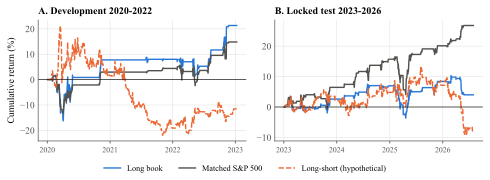
| Check | Result | Reading |
|---|---|---|
| Availability assertion | 0 violations in 60,261 rows | No feature is dated after the decision time |
| Planted leaks | 4 of 4 caught | The audit detects a future-return feature, a same-event reaction, a later-cluster surprise, and a future document in retrieval |
| Permutation of labels | Observed 0.389; null mean 0.251, max 0.273 | Ten permutations, so the p-value is coarse |
| Model Confidence Set, development log-loss | L6 without change features, L7, stack | L1 and L6 excluded; Hansen et al. (2011). A diagnostic only |
| Probability of backtest overfitting | 0.00 over 93 configurations | Bailey et al. (2017). Mixes rungs of very different content, so it cannot speak to L6 versus L7 |
| Adversarial validation | AUC 1.000 | Training and validation periods are separable: covariate shift, not evidence of leakage |
| Cross-machine repeatability | LightGBM 80% same class; elastic net 98% | Same model and data on two machines. Macro-F1 moves by up to 0.0045, more than the gap between L6 and L7 |
The results are conditional on several choices that a reader should weigh.
Universe. The firms are large survivors. Results may not extend to small firms, where filings may matter more because other information is scarce. The planned 500-firm study, which includes non-index firms, was not completed on corrected code.
Encoders and tuning. The null covers two frozen encoders with small tuning budgets. The way I pool chunks and compress vectors discards detail, and a model fine-tuned on returns, a finance-specific encoder such as SEC-BERT, or a model that reads the whole document could do better. The gate rule meant fine-tuning never ran, so the paper cannot speak to it.
Structured extraction. I built a retrieval and extraction system (BM25 and dense retrieval, reciprocal rank fusion, reranking, and Qwen2.5-7B with schema-constrained output; Cormack et al. (2009); Lewis et al. (2020)), and ran it on 149 filings. No human labels exist, so it was never scored, and H3 and H6 are untested. No result in this paper relies on it.
Data. Prices are from free sources and only daily bars are available, so the open price is the first executable price I can observe, and I cannot measure intraday reactions after the decision time. The surprise measure is time series, and EPS parsing is rule-based. Latency assumptions were not varied.
Stress folds. Firm-held-out and sector-held-out folds were built but not scored, so firm-level memorization by the models is controlled by masking alone.
Post-lock analysis. Everything in Sections VI.B to VI.E and VII.C to VII.E was written after the locked test had been scored. Apart from the numbers-only rung in Section VI.C, which is a new fit, these analyses read stored predictions and refit nothing. All of them are exploratory and should be read that way. The headline locked-test comparison of L6 and L7 is not.
| Id | Claim | Evidence | Outcome |
|---|---|---|---|
| H1 | Text adds value beyond price, metadata, and accounting | As run, embeddings over L6, which already holds classical text: validation +0.001 [−0.005, +0.008]; development +0.007 [−0.001, +0.016]; locked −0.001 [−0.012, +0.009]. Numbers-only comparison in Section VI.C | Not supported |
| H2 | Language change adds more than levels | Validation −0.001 [−0.003, +0.002]; development +0.002 [−0.003, +0.006]; locked −0.002 [−0.006, +0.003] | Not supported |
| H3 | Validated extraction adds value | Not run: no human labels | Untested |
| H4 | Vintage encoders differ from static ones | LightGBM, L7: −0.004 [−0.009, +0.001] | No detectable difference |
| H5 | Stacking beats the best single model | Development: −0.003 [−0.012, +0.008] | Not supported |
| H6 | Richer retrieval beats hybrid retrieval | Not run: no human labels | Untested |
| H7 | Analogue or time-series extensions add value | Extension disabled | Not run |
| H8 | Gains shrink under timing, costs, and the lock | L6 − L1: validation +0.032 [+0.023, +0.042]; locked +0.033 [+0.022, +0.045]. Long book on locked test −5.6% a year against the index | Classification gain persists; no economic gain |
| Drift | SUE-conditioned drift | Pre-specified measure −2.63% [−3.50%, −1.70%]; without alpha +0.12% [−0.80%, +0.88%]; calendar time +0.25% (t = 0.46) | No detectable drift; reversal is an artifact |
For 150 large US firms over 26 years, frozen embeddings of their SEC filings do not improve a forecast of the next tradable session's abnormal return once price, event metadata, accounting data, and classical text measures are known, and a model with no text at all performs about as well. A model can predict how much a stock will move after a filing. Its ability to predict which way is slight on the validation folds and undetectable on the locked test. Yearly point-in-time encoders and a static encoder perform alike, and a tradable backtest does not earn its costs. Post-earnings drift is not detectable in this survivor sample without the alpha term, and the large reversal the pre-specified test produced came from the expected-return model.
Three extensions would test these conclusions directly: the same design on a universe that includes delisted and non-index firms, analyst-based surprises in place of the time-series measure, and human labels for the extraction system, which would allow testing whether specific facts add what embeddings do not.
Replication. The repository at https://github.com/harshatangirala/sec-filings-price-impact contains the 25-stage pipeline with its tests, configuration, pre-registration file, decision log, all result tables, out-of-sample predictions and event-level drift measures in paper/replication, and the scripts in paper/analysis that produce every table and figure here. Filings can be re-downloaded from EDGAR. Prices and the dictionary are not redistributed, and the pinned sources in Table I rebuild them; results that depend on Yahoo Finance data may change slightly with revisions.
The plan was recorded in a pre-registration file and a design document, with its hash stored in the run manifest. The file is internal: it was not filed with a registry, and the repository became public only after the study ended, so its timing cannot be verified by third parties. Registered designs (Nosek et al., 2018) would give stronger assurance. The project's decision log records each change. The deviations are listed here.
This table shows why the artifact was convincing. All rows use a pre-event alpha, so every row inherits the bias described in Section VII.C, and none of them distinguishes a real reversal from a mechanical one. Returns are in percent over days [+2,+60], except where stated.
| Specification | Q1 | Q5 | Q5 − Q1 | 95% interval | t | N |
|---|---|---|---|---|---|---|
| Carhart-adjusted, baseline | +0.80 | −1.83 | −2.63 | [−3.60, −1.67] | −5.43 | 3,825 |
| Market-model-adjusted | +1.40 | −1.85 | −3.25 | [−4.39, −2.17] | −6.17 | 3,825 |
| One-session delay [+3,+61] | +0.99 | −1.80 | −2.79 | [−3.76, −1.86] | −5.89 | 3,825 |
| First leg only [+2,+20] | +0.37 | −0.55 | −0.92 | [−1.44, −0.41] | −3.71 | 3,854 |
| No other firm event within 60 sessions | −0.13 | −2.16 | −2.03 | [−4.31, +0.49] | −1.96 | 475 |
| 2000-2009 | +0.98 | −1.99 | −2.96 | [−5.14, −0.94] | −2.75 | 597 |
| 2010-2019 | +0.47 | −1.93 | −2.40 | [−3.46, −1.31] | −3.85 | 1,786 |
| 2020-2026 | +1.14 | −1.64 | −2.77 | [−4.53, −0.70] | −2.91 | 1,442 |
| Excluding 2008-2009 and 2020 | +0.70 | −1.64 | −2.35 | [−3.32, −1.31] | −4.54 | 3,330 |
| S&P 500 member at the event | +0.71 | −1.64 | −2.35 | [−3.22, −1.52] | −4.91 | 2,816 |
| Not yet / no longer a member | +1.07 | −2.35 | −3.42 | [−6.03, −0.81] | −2.78 | 1,009 |
| Above-median market cap | −0.24 | −1.67 | −1.43 | [−2.48, −0.25] | −2.21 | 1,552 |
| Below-median market cap | +1.62 | −1.92 | −3.54 | [−5.17, −1.83] | −3.82 | 1,523 |
| Above-median volatility | +1.67 | −2.59 | −4.26 | [−5.70, −2.68] | −5.01 | 1,944 |
| Below-median volatility | −0.33 | −1.20 | −0.88 | [−1.81, +0.03] | −2.08 | 1,881 |
| Returns winsorised at 1% / 99% | +0.73 | −1.74 | −2.47 | [−3.35, −1.64] | −5.81 | 3,825 |
Each item maps to an assertion or a stated report item in the pipeline. Item 4 was relabelled because stress-fold scores were not produced.
| # | Check | Status |
|---|---|---|
| 1 | overlapping windows across blocks → purge + embargo | pass |
| 2 | same-date shocks → date-disjoint splits | pass |
| 3 | duplicate / near-duplicate filings → split by accession; hashes | pass |
| 4 | firm memorization → anonymization; firm-held-out test | built, not scored |
| 5 | preprocessing fitted on training indices only (scalers, TF-IDF, PCA, imputers, calibration, thresholds, clip bounds) | pass (code-enforced; unit test) |
| 6 | test peeking → prereg hash; G4 freeze; lockbox | info |
| 7 | intraday / pre-publication contamination → T_info eligibility | pass |
| 8 | timestamp errors → four timestamps; quality flags; sensitivity | pass |
| 9 | EAR misuse → registry rule + planted leak | pass |
| 10 | earnings-date fabrication → three earnings types | pass |
| 11 | SUE from a later cluster accession → registry rule + planted leak | pass |
| 12 | XBRL ordering → accession / public_available_time ordering | pass |
| 13 | same-firm overlaps → flags + clean cohort | pass |
| 14 | survivorship → universe table + wording | info |
| 15 | right-censoring → per horizon | pass |
| 16 | retrieval leakage → historical index time filter; separate current path | pass |
| 17 | analogue outcomes (extension) | na |
| 18 | pretrained-model look-ahead → provenance rules | pass |
| 19 | distillation / continued pretraining → training-period data only | info |
| 20 | stacking → walk-forward out-of-fold predictions only | info |
| 21 | outcome-based selection → event construction reads no price fields | pass |
| 22 | data snooping → configuration counter; FDR; MCS / PBO diagnostics | info |
| 23 | covariate shift → adversarial validation (AUC near 0.5 does not prove a split unbiased) | info |
| 24 | broken audit → planted-leak self-tests (4) | pass |